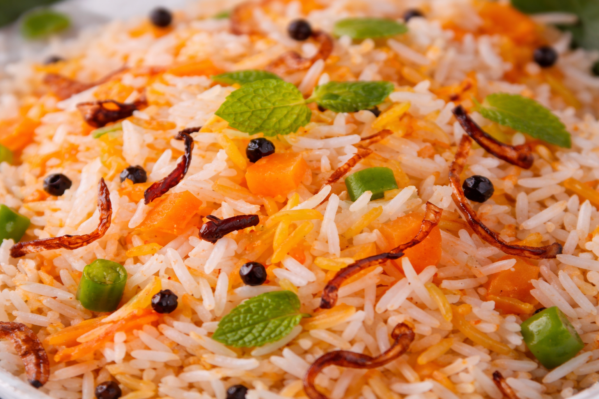

We have been well recognized as a leading rice exporter.
Kerala Matta rice (also known as Rosematta rice, Palakkadan Matta rice, Kerala Red rice, or Red parboiled rice) is an indigenous variety of rice grown in Palakkad District of Kerala. It is different from brown rice. It is popular in Kerala and Sri Lanka where it is used on a regular basis for idlies, appams and plain rice. The robust, earthy flavor of Red Matta makes it an enticing companion to lamb, beef or game meats. We are renowned for supplying Premium Quality Palakkadan Matta Rice. Our Palakkadan Matta Rice is widely demanded as it is free from foreign matter and gives great taste when cooked. We offer a wide range of Palakkadan Matta Rice to suit the diversified needs of the clients

Tanjavoor Ponni Rice

Manachanalloor Ponni Rice

Avudaiyar Kovil Ponni Rice
✔ 3 TO 4 MM
✔ 13% MAX
✔ 100%
✔ 2% MAX
✔ 1% MAX